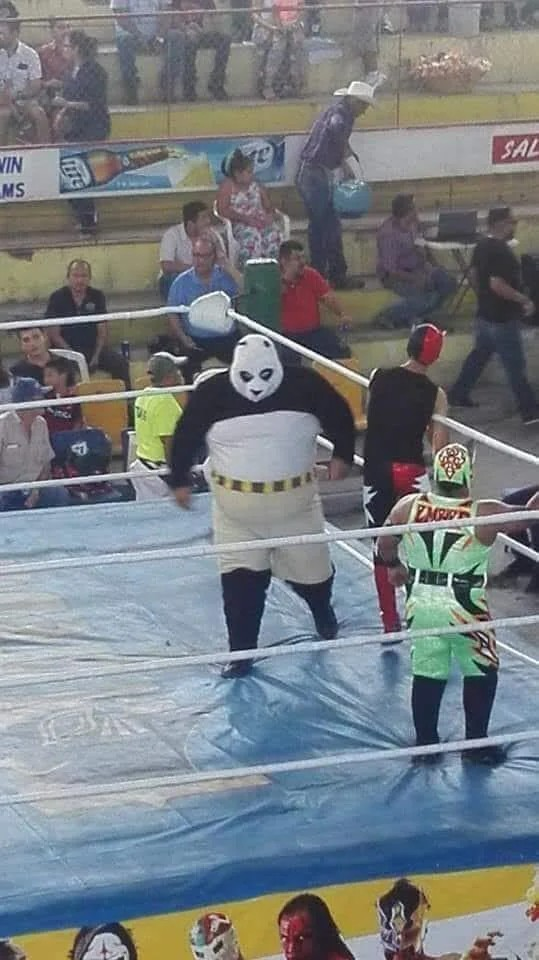

🧋 Favorite Boba Spot
I am the odd Boba-free heretic. I like lemonade stands :D
🌳 Favorite Park
The Golden Gardens, up North above Discovery Park. Aside from the usual beach stuff, its nice to go out for a walk in non-summer weather.
🍽️ Best Place to Eat
These days, at home! I try to eat with family or my cats atleast; I've been trying to be aware of taking things for granted.
🥾 A Fun Adventure
Here's my old Xbox Live profile photo! As the kids say, I need to touch grass.
🎶 Other Things I Enjoy
- Playing bass guitar! Any Sabbath fans?
- Taking care of my cats, Jimmy and Whiskers!
- Getting back into reading. Going through George Saunders short stories again!
- Trying to make the perfect Air-Fryed Wings. The wing recipe dies with me!
- The new "remaster" of Oblivion has me in its clutches. I still remember Grandma taking me to Gamestop when I was 9; I had to convince the employee that she DID know what M for Mature meant :D